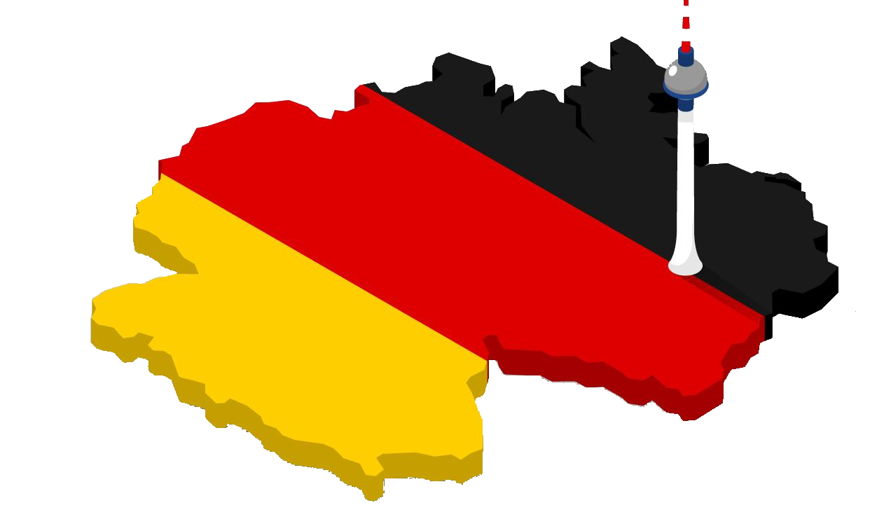

Warum dieser Verband ?
Der Verband war am Anfang aus den 2000ern gegründet weil :
- In Wallonien die Situation der deutschen Sprache in Schulen und Wirtschaft ganz anders ist als in Flandern und Brüssel. Wir brauchen darum spezielle Strategien um unsere Sprache zu fördern.
- Die Gebiet auf der deutschen Sprache ist ein Teil von der Région wallonne, und er hat denn zwei Sprachen.
Einige Beispielen das wir gemachen haben:
- Information geben am warum der deutschen Sprache wichtig ist in België, in Europa und in die Welt;
- Contacts avec les écoles et les associations de parents;
- Lobbying auprès des décideurs politiques;
- Concours dans les écoles;
- Création, avec le concours du Parlement et du Gouvernement de Wallonie, d'une « Journée de la langue allemande » (troisième mercredi du mois d'octobre);
- Artikeln in deutscher Sprache in die Zeitschrift 'Vivre la Wallonie';
- Création, dans les dix « Maisons de Wallonie » de stands où le public peut s'informer sur la Communauté germanophone et sur l'importance de la langue allemande.
(Traduction naïve et scolaire du texte trouvé sur le site officiel de l'APAW https://www.apawallemand.com/qui-sommes-nous )
Kontakt: manfred.peters@unamur.be oder apaw.namur@gmail.com

